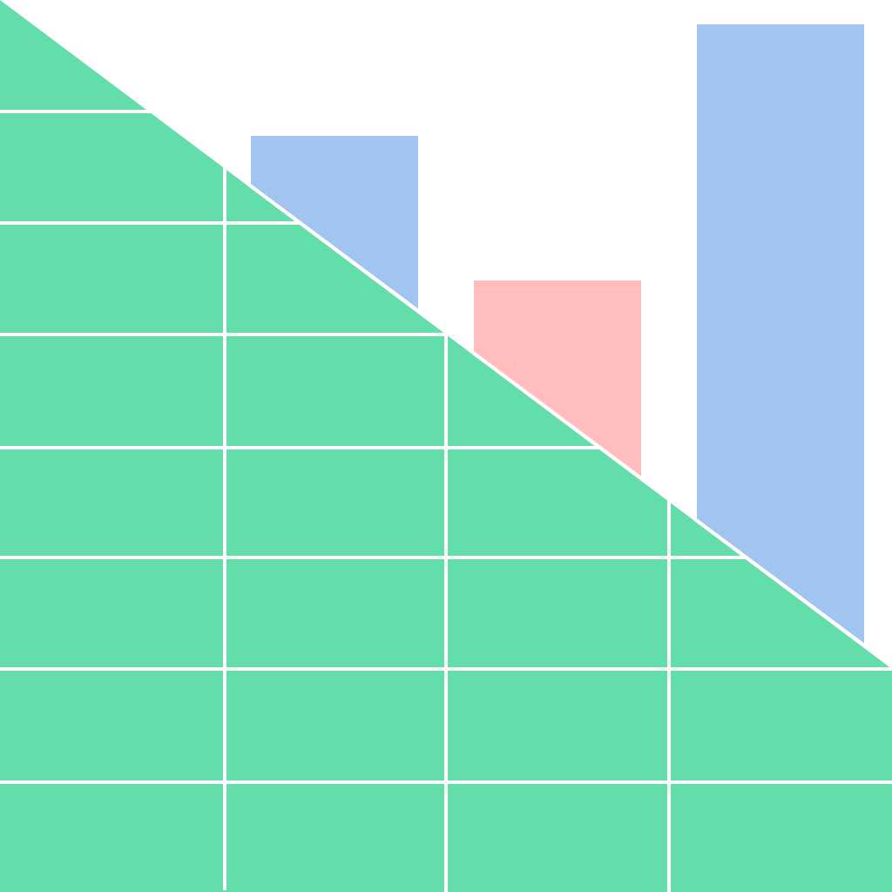

Drop a file here
... or click here to select a file
Choose a worksheet:
SheetJS In-Browser Live Grid Demo
Drop a spreadsheet in the box to the left to see a preview.
Need a file? Why not the
OMB FY 2014 Federal Receipts?
View This Page Source
;
XLSX Library
(for parsing);
Grid Library
File Formats
Library Source
Interactive Demo
"xlsx" on npm
node CI status
browser stress test
This particular parser assumes that
the first row of the table is a header.
For parsing a more general file, check the Interactive Demos
The entire process occurs within your browser
NO SPREADSHEET DATA IS SENT TO ANY SERVER (parsing and rendering done in your browser)
This is a work in progress. Every bit helps. Please email
dev@sheetjs.com
with your feedback.
Follow us on Twitter
@SheetJS